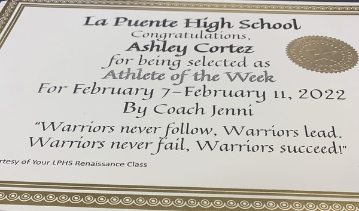

Portfolio


I am a former undergraduate student at the University of California Riverside, at the moment I am an undeclared student but I'm going to be pursuing a career as a sociology major with a minor in Spanish. I live in La Puente California 50 minutes away from Riverside. I am Mexican -American which means that I can speak both English and Spanish fluently, I can switch from the two languages without any problem and I can help anyone that speaks any of those languages. My academic background at the moment is a high school diploma and currently working on a barchelor degree. Some of the things that I enjoy doing are physical activities such as running and exercising.The curricular activities that I did while in high school were sports such as soccer, I joined clubs ,AP classes and Honors, and an Advance class in Art. As of right now In college I'm not in any organization but in the next few years I'm planning on joining more clubs and organizations to help with my skills such as communication and also to meet more people to learn things from them.
Creativity is one of the skills that the most strongest out of all my other skill, I am able to come up with original ideas and make my work space more fun and creative on top of that I am also good at solving problems I have the patience and time to solve an issue and I try to look for solutions to solve the problem. Something that would make me suitable for a job is that I can work with others and I take other people’s ideas and opinions seriously. Some of the things I do when it comes to work is to keep my work space clean and organized, I work effectively when I’m under pressure, and I try to finish my work as fast and early as possible.
Some of my hobbies are going on long walks in my free time and I enjoy taking pictures of nature or things that I see outside while on walks. I have tried to do other hobbies that would be helpful in my future work opportunities, as of right now I am learning how to write faster and more effectively and I will try to learn another language to communicate with people from around the country and since America is a place that has multiple languages and cultures I would be able to connect with others and make my job more efficient. Lastly, after finishing with college I would like to work on something that includes technology and makes me think more critically and where I would be able to use my skills and hobbies effectively and probably in the future get a masters degree or get another bachelor's degree in the field of psychology or in criminal justice just so that I can have more opportunities for different jobs and work on other fields.
• I helped a small shop owner at an event
• I would clean the station and attend clients
• I would go to practces after class
• I would ran almost two ours each practice
• Sign up to run marathons
• Run over three marathons